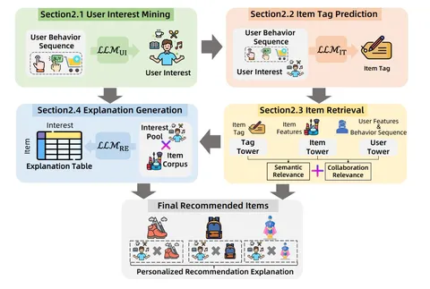

Сегодня начинаем разбор недавнего техрепорта от Alibaba о новом подходе к рекомендациям RecGPT. В нём авторы предлагают по максимуму задействовать большие языковые модели.
Классические рекомендательные системы учатся в основном на логах кликов. Такой подход приводит к ряду ограничений: формируются «пузыри», когда пользователю постоянно показывают одно и то же; сложно работать с длинным хвостом товаров; возникают разные bias'ы (например, популярности). Но главное — при таком обучении теряется семантическая информация, а люди выбирают товары не только на основе кликов, а исходя из более сложных мотивов и контекстов.
В качестве решения Alibaba предлагают использовать LLM с ризонингом, чтобы модель не просто фиксировала клики, а пыталась понять, почему пользователь может захотеть тот или иной товар.
Но и тут свои сложности:
— LLM нужно адаптировать к конкретному домену;
— важно укладываться в ограничения по времени отклика и вычислительным ресурсам;
— по-прежнему сложно интегрироваться в индустриальные системы.
Пайплайн RecGPT состоит из четырёх частей:
1. User Interest Mining — извлечение интересов пользователя из истории;
2. Tag Prediction — генерация тегов (описаний желаемых товаров);
3. Item Retrieval — сопоставление тегов с реальными товарами;
4. Personalized Explanation — генерация объяснений, почему система рекомендует этот товар.
Каждый этап можно интерпретировать — это полезно и для пользователей (доверие к системе), и для разработчиков (удобнее отлаживать).
RecGPT внедрили в сценарий Guess What You Like (беззапросные рекомендации на taobao.com). В результате получили рост CTR, просмотров страниц и доли активных пользователей, а ещё увеличили разнообразие по категориям. Улучшения заметили и мерчанты: товары стали лучше доходить до целевой аудитории.
Alibaba заявляют, что их решение — первый в мире успешный деплой reasoning-LLM в рекомендательную систему.
В следующей части — подробнее об архитектуре рексистемы.
@RecSysChannel
Разбор подготовил
